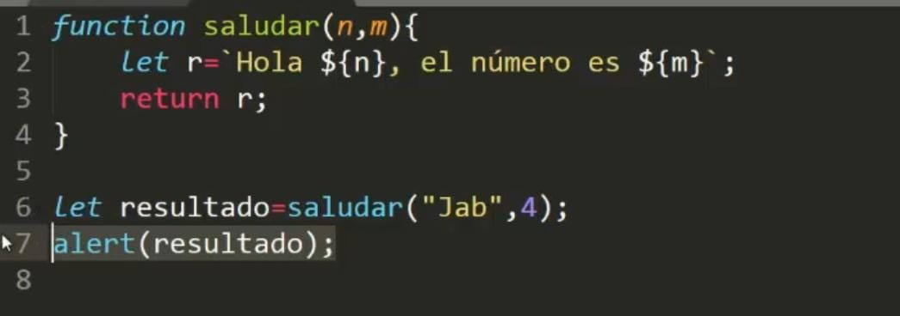
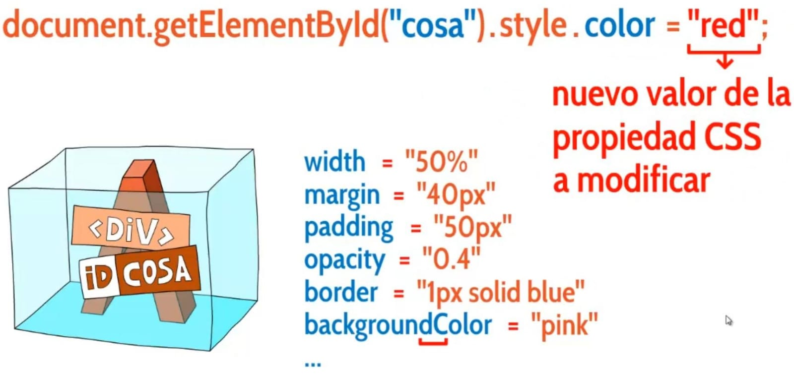

lista de ordenes que se ejecutan en un orden indicado, tantas veces como la funtion haya sido llamada. si esta no se llama las funtion no se ejecuta. estas pueden ser de utilidad cuando vemos que algo se repite muchas veses y asi crear una funtion agrupando la lineas de codigo y hacer una llamada a la funtion donde la nesecitemos para que se a mas corto y sencillo combrender
es como una carpeta que tiene un nombre y dentro de esa carpeta tiene unas instrucciones que al llamar la funtion(carpeta) ase lo que esta dentro de ella y se ejecuta siempre y cuando se llama la funtion
para llamar a una funtion: nombre_de_la_funtion()
LLAMAR UNA FUNTION DENTRO DE UNA FUNTION
si estamos en una funtion y nesecitamos aceder a otra, se ya se llama la funtion y se ponen los () y si hay lineas de codigo debajo de la llamada a la funtion este se regresa
COMO EJECUTAR LA PRIMERA FUNTION
1.colocar la llamada de la funtion en la primera linea de el codigo
Ej: 1
nombre_de_la_funtion() funtion nombre_de_la_funtion (){ let nombreDeValor = 2 }
2.boton y evento : 1 linea => window.onload = inicio; al hacer click empezara todas la aciones
EVENTOS
un evento es una palabra que indica cuando se ejecuta una funtion estas se escriben todo junto y sin ninguna mayuscula
se caracterisan por iniciar con "on" y luego una palabra Ej:onclick
para ejecutar una funtion normalmente esto se hace atraves de las Eventos
onclick: cuando se haga click en el boton onmouseenter: cuando el cursor pase por encima ondblclick: cuando se haga doble click en onload: cuando la pagina carge
= funtion_1 = nombre de la funtion a llamar, SIN ABRIR ( )
NOTA: SI SE EJECUTA COMO ESTA EN LA PRIMERA LINEA DARA ERROR POR QUE EL HTML AUN NO A CARGADO EL Elemento CON EL Id LLAMADO
ERRORES
Cuando la pagina aparece en el navegador comienza de forma secuecial osea linea a linea y si el stript esta en la parte de al inicio de de el head o el body al leer el nombre de el boton "boton_ir" el da error al no estar creado aun el button que se le indica
SOLUCION
al meter la linea de error en una funtion .js no la leera ya que no sea llamado esta funtion y solo la leera al momento de llamarla este es window.onload = inicio
window : la ventana osea el html en el navegador onload : esperar o carge = inicio : ejecuta la funtion inicio
NOTA : en la funtion inicio es aconsejable tener todos los eventos
tambie se pueden solucionar con simplemente ponerle "defer" al finalizar la direwccion de el .js
NOMBRES DE FUNTION
Se nombran tal cual como a una variable con su sintaxis, sin espaciops, pueden separar palabra con _ o con inici de Mayusculas, y sin numeros al inicio de el nombre de un funtion y se termina con un () y {}
MANDAR DATOS A LA FUNTION
Ej : teoria.js/2 =
DEVOLVER DATOS DE UNA FUNTION
podemos hacer que una funcion devuelva datos con un return y el nombre de el valor a devolver Ej : teoria.js/3

BUTTON y EVENTOS en .js
llamar un elemento de el body con Id desde js document.getElementById.("botonEvento1").onclick el "." es para hacer eventos sea para cmbiar el comportamiento o sus propiedades br
window.onload = listoTodo cuando la ventana (la pagina) este lista, has... = listoTodo
CSS EN JS
se utilisa el ".style" mas la caractericteristica a cambiar y luego el nombre el nombre se la propiedad css a modificar

el nombre de el style debe ser sin "-" ya que .js no lo recose y cambiar los por iniciar con mayuscula y pegado